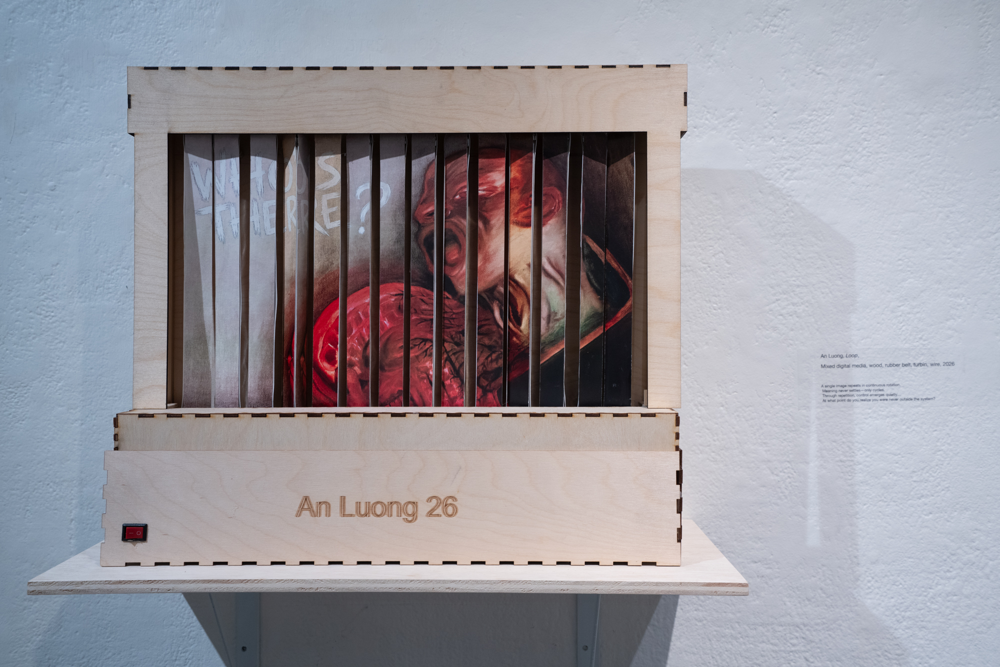

The Slave of Sin



“The Slave of Sin” is a pictorial artwork that reminds people about their sins: Lust, Greed, Sloth, Wrath, Envy, and Pride, especially striking in this era of great technology. This piece aims to provide a fresh perspective on how modern technological advances have intertwined with human vices, influencing and amplifying our sinful behaviors. The phone, skeleton, human, and the question represent the connection between technology and sin. The culmination of the artwork seeks to provoke thought and provide answers about this unique combination, urging viewers to reflect on their own interactions with technology and its impact on their lives.